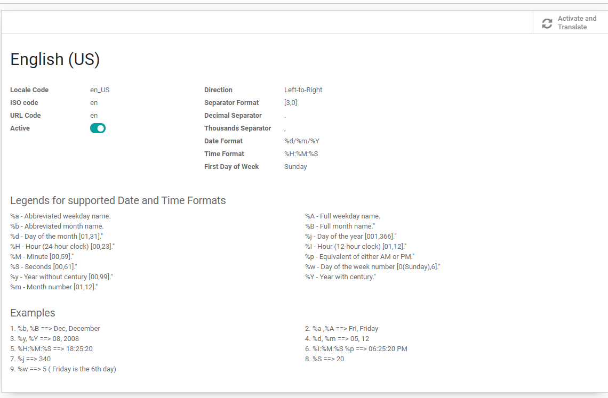

前言
第一部分 基础数据
第一章 Odoo简介
第二章 数据库管理
第三章 公司和用户管理
第四章 联系人与合作伙伴
第五章 邮箱配置
第二部分 销售管理
第一章 基础概念
第二章 产品管理
第三章 销售流程
第四章 税率
第五章 销售库存管理
第六章 折扣与价格表
第七章 租赁
第三部分 采购管理
第一章 采购管理
第二章 成本计算
第四部分 仓库管理
第一章 仓库管理
第二章 库位管理
第三章 出入库和内部调拨
第四章 盘点
第五章 扫码操作
第六章 包装
第七章 集成物流公司
第八章 成本核算
第九章 顺丰速递
第五部分 生产管理
第一章 BOM管理
第二章 计划生产
第三章 管理工单
第四章 外协加工
第五章 工作中心
第六章 质量检测
第六部分 财务管理
第一章 基础概念
第二章 开票
第三章 支付
第七部分 多公司
第一章 多公司间的采购
第七部分 网站
第一章 门户
第二章 商城
第八部分 销售点(POS)
第一章 EPOS打印
第九部分 设置
第一章 通用设置
第九章 技术设置
第十部分 通用解决方案
第一章 企业微信
第二章 百度地图
第三章 Pos LinePay
第四章 快递鸟模块
本书使用 GitBook 发布
第九章 技术设置
第九章 技术设置
翻译中的语言格式
odoo可以根据不同的翻译设置不同的数据格式，包括数据精度、时间格式等。打开设置-翻译-语言，然后可以在特定的语言设置中设置该语言环境下的数据精度和日期、时间格式等。

results matching "
"
No results matching "
"